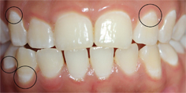

ترمیم معدنی ضایعهٔ اولیه با رویش دوبارهٔ دندان یا پرشدن خودبهخودی حفره فرق دارد. این مطالعه هنوز دلیل کافی برای تغییر درمان یا انتخاب یک محصول خاص نیست.

پژوهش تازه چه میگوید؟
پژوهش Nebu George Thomas و همکاران، منتشرشده در Odontology در ۲۰ سپتامبر ۲۰۲۶، ترکیب نانوهیدروکسیآپاتیتِ بهدستآمده از فلس ماهی و آرژینین را بررسی کرده است. آزمایش روی ۴۰ دندان خارجشده و طی ۲۸ روز انجام شد. گروه ترکیبی همراه با خمیردندان فلورایددار، بیشترین افزایش سختی سطح را نشان داد. این نتیجه دربارهٔ نمونههای آزمایشگاهی است، نه موفقیت درمان در بیماران. [۱]
ترمیم معدنی دقیقاً یعنی چه؟
سطح دندان در طول روز میان از دست دادن و بازگرفتن مواد معدنی در نوسان است. اسید تولیدشده در پلاک میتواند این تعادل را به زیان مینا تغییر دهد. بزاق و فلوراید به بازگرداندن مواد معدنی کمک میکنند؛ به همین دلیل، ضایعهٔ بسیار اولیه ممکن است پیش از ایجاد حفره متوقف یا تا حدی معکوس شود. [۲] [۳]
اما این فرایند با بازسازی کامل دندانی که بخشی از آن از بین رفته یکسان نیست. وقتی حفره تشکیل شده، ارزیابی و درمان دندانپزشکی لازم است. ظاهر سفید یک ناحیه هم بهتنهایی برای تشخیص کافی نیست؛ مشاهدهٔ تصویر آموزشی جای معاینه را نمیگیرد. [۲]
چرا نتیجهٔ امیدوارکننده، هنوز درمان قطعی نیست؟
برای خواندن چنین خبری، بهتر است سه پرسش جدا بپرسیم: چه چیزی اندازهگیری شده، در چه محیطی، و برای چه تصمیمی؟ سختی سطح یک شاخص پژوهشی است. پرسش بیمار معمولاً چیز دیگری است: آیا احتمال پوسیدگی، درد یا نیاز به ترمیم در زندگی واقعی کمتر میشود؟ پاسخدادن به این پرسش به شواهدی متناسب با همان پیامدها نیاز دارد.
این تفکیک، ارزش کار آزمایشگاهی را کم نمیکند؛ جای درست آن را در مسیر پژوهش مشخص میکند. پیش از توصیهٔ گسترده، باید عملکرد ترکیب در شرایط دهان، ایمنی، دوام اثر و مقایسهٔ بالینی بررسی شود. در این گزارش، بررسی متن کامل یا داوری مستقل تخصصی ادعا نمیکنیم.
امروز چه چیزی برای مراقبت روزمره مهم است؟
راهنمای NIDCR همچنان بر مسواکزدن روزانه دو بار با خمیردندان فلورایددار، تمیزکردن بین دندانها، کاهش مصرف مکرر مواد قندی و معاینهٔ منظم تأکید دارد. [۲] انجمن دندانپزشکی آمریکا نیز نقش فلوراید در پیشگیری از پوسیدگی را توضیح میدهد؛ انتخاب شیوه و مقدار مناسب، به سن و شرایط فرد وابسته است. [۴]
از این خبر نمیتوان دستور ساخت ترکیب خانگی استخراج کرد یا نتیجه گرفت که یک خمیردندان تجاری دقیقاً همان مادهٔ آزمایششده است. اگر دربارهٔ لکهٔ سفید یا خطر پوسیدگی سؤال دارید، نام محصول و وضعیت دندان را با دندانپزشک مطرح کنید.
چطور خبرهای بعدی این موضوع را دنبال کنیم؟
بهجای دنبالکردن عبارتهایی مانند «معجزهٔ ترمیم دندان»، ببینید مطالعهٔ بعدی انسانی است یا آزمایشگاهی، چند شرکتکننده دارد، گروه مقایسه چیست و چه مدت پیگیری شده است. اندازهٔ اثر و محدودیتها از تیتر مهمترند. در بخش جدیدترینها، هر خبر با تاریخ منبع و نوع شواهد معرفی میشود تا بتوانید مسیر پیشرفت واقعی را از تکرار یک ادعا تشخیص دهید.
منابع اصلی
بررسی چکیدهٔ پژوهش و منابع آموزشی اصلی؛ متن کامل مطالعه بررسی نشده است.
این مطلب برای آگاهی عمومی است و جایگزین تشخیص یا درمان فردی نیست.